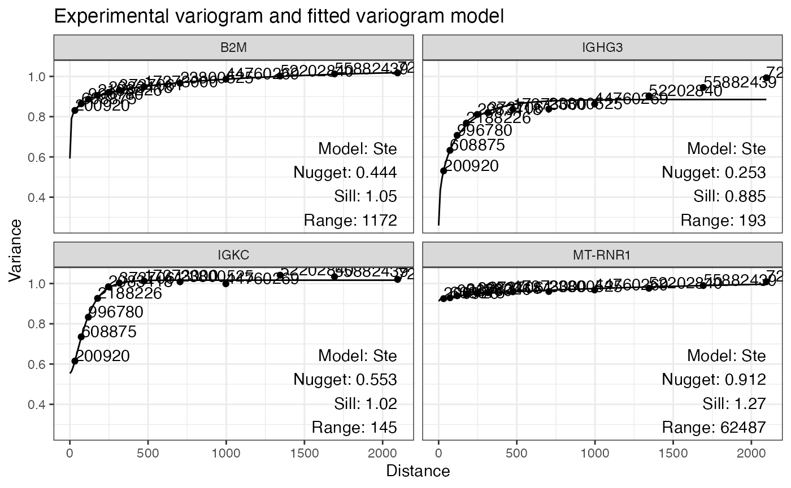
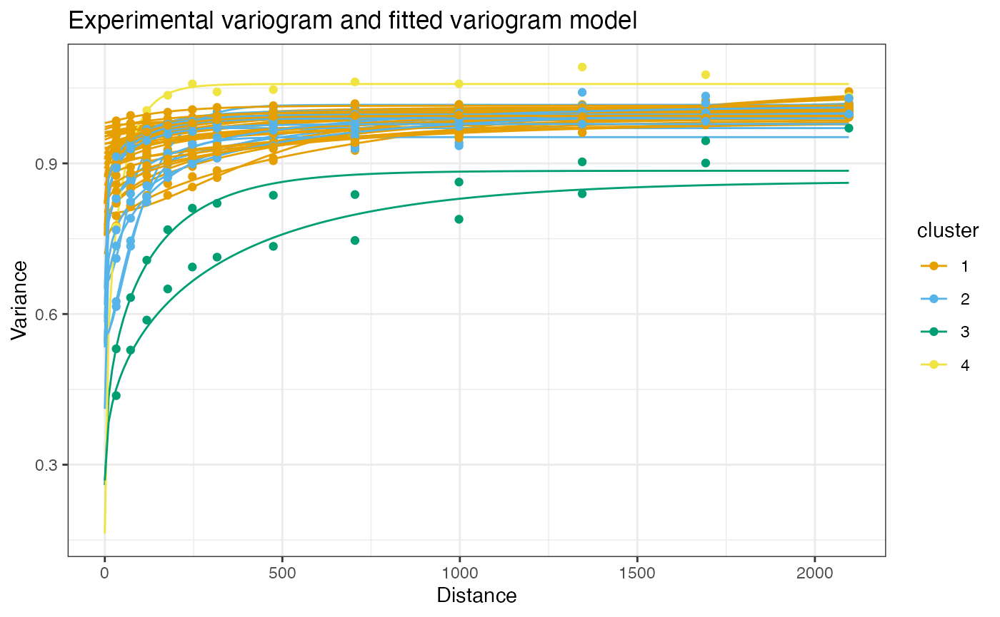
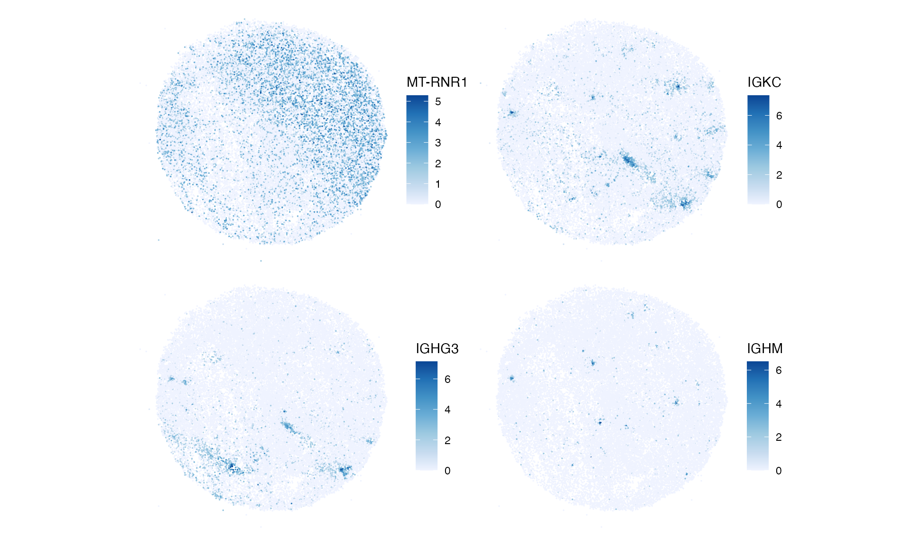
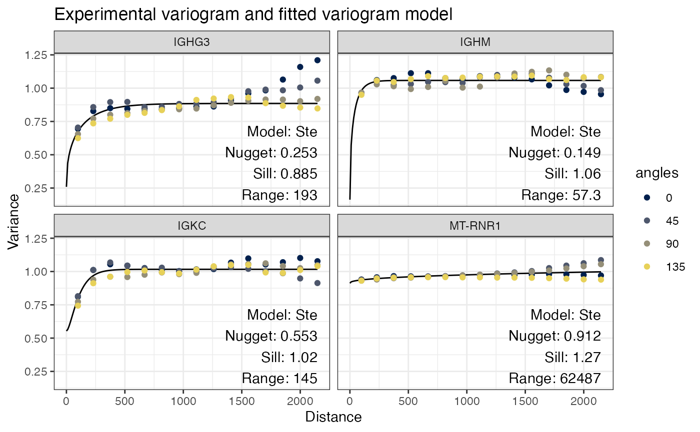
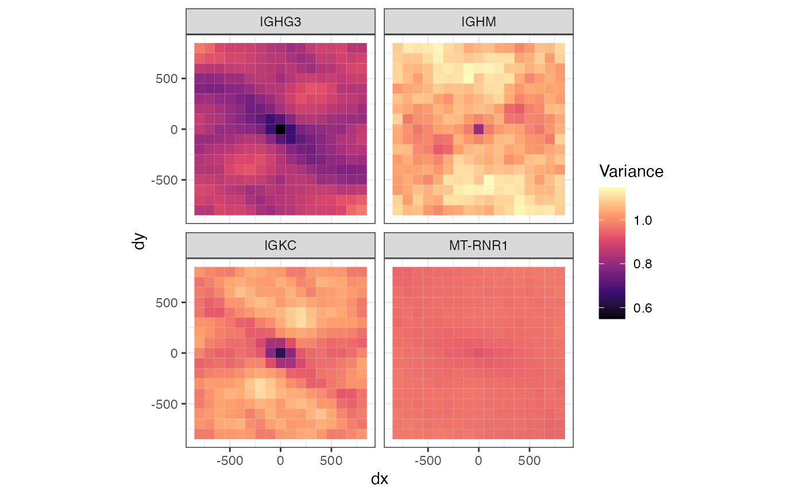
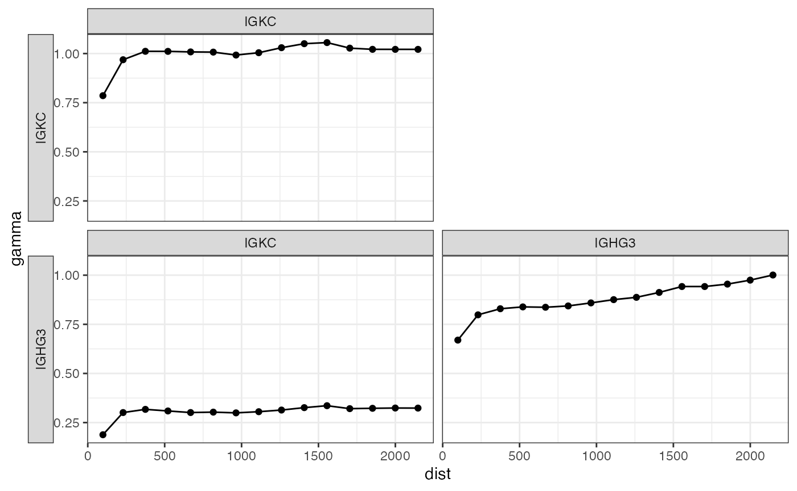
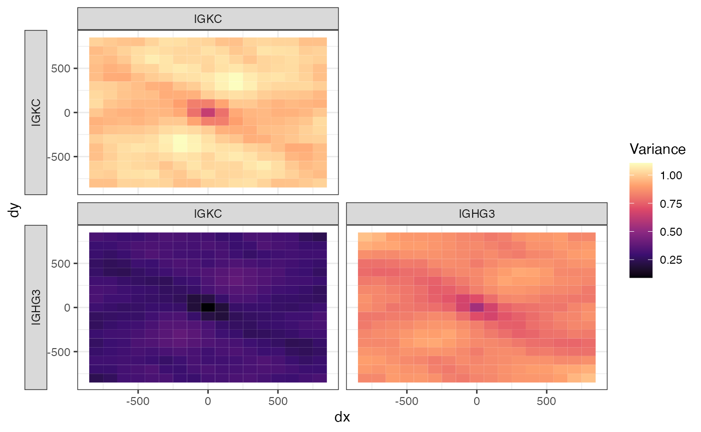

Introduction
In geostatistical data, an underlying spatial process is sampled at known locations. Kriging uses a Gaussian process model to interpolate the values between the sample locations, and the semivariogram is used to model the spatial dependency between the locations as the covariance of the Gaussian process. When not kriging, the semivariogram can be used as an exploratory data analysis tool to find the length scale and anisotropy of spatial autocorrelation. The semivariogram is defined as
\[ \gamma(t) = \frac 1 2 \mathrm{Var}(X_t - X_0), \]
where \(X\) is the value such as gene expression, and \(t\) is a spatial vector. \(X_0\) is the value at a location of interest, and \(X_t\) is the value lagged by \(t\). With positive spatial autocorrelation, the variance would be smaller among nearby values, so the variogram would increase with distance, eventually leveling off when the distance is beyond the length scale of spatial autocorrelation. The “semi” comes from the 1/2, which comes from the assumption that the Gaussian process is weakly stationary, i.e. the covariance between two locations only depends on the spatial lag between them:
\[\begin{align} \mathrm{Var}(X_{t_2} - X_{t_1}) &= \mathrm{Var}(X_{t_2}) + \mathrm{Var}(X_{t_1}) - 2\mathrm{Cov}(X_{t_2}, X_{t_1}) \\ &= 2\rho(0) - 2\rho(t_2 - t_1), \end{align}\]
where \(\rho\) is a covariance function and \(t_1\) and \(t_2\) are spatial locations. A model can be fitted to the empirical semivariogram, to model this \(\rho\). That the variance of differences between the value across locations only depends on the spatial lag means intrinsically stationary, which is even weaker and more generalizable than weakly stationary. The weaker assumption is used in kriging.
This vignette demonstrates the variogram as an ESDA tool, including interpretation of the univariate variogram, anisotropic variograms (variograms in different directions), variogram maps, and bivariate cross variograms.
Here we load the packages:
library(Voyager)
library(SFEData)
library(SpatialFeatureExperiment)
library(scater)
library(scran)
library(ggplot2)
library(BiocParallel)
library(bluster)
library(dplyr)
theme_set(theme_bw())The Slide-seq melanoma metastasis data (Biermann et al. 2022) is used for demonstration. QC is performed in another vignette.
(sfe <- BiermannMelaMetasData(dataset = "MBM05_rep1"))
#> see ?SFEData and browseVignettes('SFEData') for documentation
#> downloading 1 resources
#> retrieving 1 resource
#> loading from cache
#> class: SpatialFeatureExperiment
#> dim: 27566 29536
#> metadata(0):
#> assays(1): counts
#> rownames(27566): A1BG A1BG-AS1 ... ZZZ3 snoZ196
#> rowData names(3): means vars cv2
#> colnames(29536): ACCACTCATTTCTC-1 GTTCANTCCACGTA-1 ... ACGCGCAATCGTAG-1
#> TTGTTCCGTTCATA-1
#> colData names(4): sample_id nCounts nGenes prop_mito
#> reducedDimNames(0):
#> mainExpName: NULL
#> altExpNames(0):
#> spatialCoords names(2) : xcoord ycoord
#> imgData names(1): sample_id
#>
#> unit: full_res_image_pixels
#> Geometries:
#> colGeometries: centroids (POINT)
#>
#> Graphs:
#> sample01:
sfe <- logNormCounts(sfe)Variograms will be demonstrated on some of the top highly variable genes (HVGs)
dec <- modelGeneVar(sfe)
hvgs <- getTopHVGs(dec, n = 50)Variogram
The same user interface used to run Moran’s I can be used to compute
variograms. However, since the variogram uses spatial distances instead
of spatial neighborhood graph, the colGraph does not need
to be specified. Instead, a colGeometry can be specified,
and if the geometry is not POINT, then
spatialCoords(sfe) will be used to compute the distances.
Behind the scene, the automap
package is used, which fits a number of different variogram models to
the empirical variogram and chooses one that fits the best. The
automap package is a user friendly wrapper of
gstat, a time honored package for geostatistics.
sfe <- runUnivariate(sfe, "variogram", hvgs, BPPARAM = SnowParam(2),
model = "Ste")
#> Warning: <anonymous>: ... may be used in an incorrect context: 'fun(x[i, ], ...)'
plotVariogram(sfe, hvgs[1:4], name = "variogram")
The data is binned by distance between spots and the variance is
computed for each bin. While gstat’s plotting functions say
“semivariance”, because the data is scaled so the variance is 1, I do
think the variance rather than semivariance is plotted. The numbers by
the points in the plot indicate the number of pairs of spots in each
bin. “Ste” means the Matern model with M. Stein’s parameterization was
fitted to the points.
Nugget is the variance at distance 0, or variance within the first distance bin. The data is scaled by default prior to variogram computation to make the variograms for multiple genes comparable.
Spatial autocorrelation makes the variance smaller at shorter distances. When the variogram levels off, it means that spatial autocorrelation no longer has an effect at this distance. Sill is the variance where the variogram levels off. Range is the distance where the variogram levels off.
In the first 4 genes, IGHG3 and IGKC seem to have stronger spatial autocorrelation that dissipate in 100 to 200 units (whether it’s microns or pixels is unclear from the publication), whereas spatial autocorrelation of B2M and MT-RNR1 is much weaker and has longer length scale.
Here the genes are plotted in space:
plotSpatialFeature(sfe, hvgs[1:4], size = 0.3) &
theme_bw() # To show the length units
The length scales of spatial autocorrelation for these genes are quite obvious from just plotting the genes. Then what’s the point of plotting variograms for ESDA? We can also compute variograms for a larger number of genes and cluster the variograms for patterns in spatial autocorrelation length scales, or compare variograms of the same genes across different samples. Here we cluster the variograms for top highly variable genes (HVGs):
The BLUSPARAM argument is used to specify methods of
clustering, as implemented in the bluster package. Here we
use hierarchical clustering.
clusts <- clusterVariograms(sfe, hvgs, BLUSPARAM = HclustParam())Then plot the clusters:
plotVariogram(sfe, hvgs, color_by = clusts, group = "feature", use_lty = FALSE,
show_np = FALSE)
It seems that there are many genes, like MT-RNR1, with weak spatial autocorrelation over longer length scales, genes with stronger and shorter range spatial autocorrelation (around 150 to 200 units) like IGKC, and genes with somewhat longer length scale of spatial autocorrelation (around 400 units).
Plot one gene from each cluster in space:
genes_clusts <- clusts |>
group_by(cluster) |>
slice_head(n = 1) |>
pull(feature)
plotSpatialFeature(sfe, genes_clusts, size = 0.3)
MT-RNR1 is more widely expressed. IGKC and ICHC3 are restricted to smaller areas, and IGHM is restricted to even smaller areas. Note that genes with variograms in the same cluster don’t have to be co-expressed; they only need to have similar length scales and strengths of spatial autocorrelation.
Anisotropy
Anisotropy means different in different directions. An example is the cerebral cortex, which has a layered structure. The variogram can be computed in different directions.
Anisotropic variogram
The directions on which to compute variograms can be explicitly
specified, in the alpha argument. However, since
gstat does not fit anisotropic variograms, the model is
fitted to all directions and the empirical variograms at each angle are
plotted separately. Here we compute anisotropic variograms for the 4
genes above:
sfe <- runUnivariate(sfe, "variogram", genes_clusts, alpha = c(0, 45, 90, 135),
# To not to overwrite omnidirectional variogram results
name = "variogram_anis", model = "Ste",
BPPARAM = SnowParam(2))
#> gstat does not fit anisotropic variograms. Variogram model is fitted to the whole dataset.
#> Warning: <anonymous>: ... may be used in an incorrect context: 'fun(x[i, ], ...)'
plotVariogram(sfe, genes_clusts, group = "angle", name = "variogram_anis",
show_np = FALSE)
Here the line is the variogram model fitted to all directions and the text describes this model. The points show the angles in different colors. Zero degree points north (up), and the angles go clockwise.
Variogram map
The variogram map is another way to visualize spatial autocorrelation in different directions. It bins distances in x and distances in y, so we have a grid of distances where the variance is computed. Just like the variograms above, the origin usually has a low value, because spatial autocorrelation reduces the variance in a short distance, and the values increase with increasing distance from the origin, but it can increase more quickly in some directions than others. Here to compute variogram maps for the 4 genes above:
sfe <- runUnivariate(sfe, "variogram_map", genes_clusts, width = 100,
cutoff = 800, BPPARAM = SnowParam(2), name = "variogram_map2")
#> Warning: <anonymous>: ... may be used in an incorrect context: 'fun(x[i, ], ...)'The width argument is the width of the bins, and
cutoff is the maximum distance.
plotVariogramMap(sfe, genes_clusts, name = "variogram_map2")
Cross variogram
The cross variogram is used in cokriging, which uses multiple variables in the spatial interpolation model. The cross variogram is defined as
\[ \gamma(t) = \frac 1 2 \mathrm{Cov}(X_t - X_0, Y_t - Y_0), \]
where \(Y\) is another variable. The
cross variogram also has nugget, sill, and range. It shows how the
covariance between two variables changes with distance.
Voyager supports multiple bivariate spatial methods, and
the cross variogram is one of them. Just like for univariate spatial
methods, Voyager provides a uniform user interface for
bivariate methods. However, bivariate local methods can’t be stored in
the SFE object at present because they tend to have very different
formats in outputs (e.g. a correlation matrix for Lee’s L and a list for
most other methods) some of which may not be straightforward to store in
the SFE object.
cross_v <- calculateBivariate(sfe, "cross_variogram",
feature1 = "IGKC", feature2 = "IGHG3")
plotCrossVariogram(cross_v, show_np = FALSE)
The facets are shown in a matrix, whose diagonal is the variogram for each gene, and off diagonal entries are cross variograms. Here for IGKC and IGHG3, the length scale of the covariance is similar to that of spatial autocorrelation.
There is also a cross variogram map to show the cross variogram in different directions:
cross_v_map <- calculateBivariate(sfe, "cross_variogram_map",
feature1 = "IGKC", feature2 = "IGHG3",
width = 100, cutoff = 800)
plotCrossVariogramMap(cross_v_map)
Session Info
sessionInfo()
#> R version 4.3.3 (2024-02-29)
#> Platform: x86_64-apple-darwin20 (64-bit)
#> Running under: macOS Ventura 13.6.6
#>
#> Matrix products: default
#> BLAS: /Library/Frameworks/R.framework/Versions/4.3-x86_64/Resources/lib/libRblas.0.dylib
#> LAPACK: /Library/Frameworks/R.framework/Versions/4.3-x86_64/Resources/lib/libRlapack.dylib; LAPACK version 3.11.0
#>
#> locale:
#> [1] en_US.UTF-8/en_US.UTF-8/en_US.UTF-8/C/en_US.UTF-8/en_US.UTF-8
#>
#> time zone: UTC
#> tzcode source: internal
#>
#> attached base packages:
#> [1] stats4 stats graphics grDevices utils datasets methods
#> [8] base
#>
#> other attached packages:
#> [1] dplyr_1.1.4 bluster_1.12.0
#> [3] BiocParallel_1.36.0 scran_1.30.2
#> [5] scater_1.30.1 ggplot2_3.5.0
#> [7] scuttle_1.12.0 SingleCellExperiment_1.24.0
#> [9] SummarizedExperiment_1.32.0 Biobase_2.62.0
#> [11] GenomicRanges_1.54.1 GenomeInfoDb_1.38.8
#> [13] IRanges_2.36.0 S4Vectors_0.40.2
#> [15] BiocGenerics_0.48.1 MatrixGenerics_1.14.0
#> [17] matrixStats_1.2.0 SpatialFeatureExperiment_1.3.0
#> [19] SFEData_1.4.0 Voyager_1.4.0
#>
#> loaded via a namespace (and not attached):
#> [1] later_1.3.2 bitops_1.0-7
#> [3] filelock_1.0.3 tibble_3.2.1
#> [5] xts_0.13.2 lifecycle_1.0.4
#> [7] sf_1.0-16 edgeR_4.0.16
#> [9] lattice_0.22-6 magrittr_2.0.3
#> [11] limma_3.58.1 sass_0.4.9
#> [13] rmarkdown_2.26 jquerylib_0.1.4
#> [15] yaml_2.3.8 metapod_1.10.1
#> [17] httpuv_1.6.15 sp_2.1-3
#> [19] RColorBrewer_1.1-3 DBI_1.2.2
#> [21] abind_1.4-5 zlibbioc_1.48.2
#> [23] purrr_1.0.2 RCurl_1.98-1.14
#> [25] rappdirs_0.3.3 GenomeInfoDbData_1.2.11
#> [27] ggrepel_0.9.5 irlba_2.3.5.1
#> [29] terra_1.7-71 units_0.8-5
#> [31] RSpectra_0.16-1 dqrng_0.3.2
#> [33] pkgdown_2.0.7 DelayedMatrixStats_1.24.0
#> [35] codetools_0.2-20 DelayedArray_0.28.0
#> [37] gstat_2.1-1 tidyselect_1.2.1
#> [39] farver_2.1.1 ScaledMatrix_1.10.0
#> [41] viridis_0.6.5 BiocFileCache_2.10.2
#> [43] jsonlite_1.8.8 BiocNeighbors_1.20.2
#> [45] e1071_1.7-14 systemfonts_1.0.6
#> [47] tools_4.3.3 ggnewscale_0.4.10
#> [49] ragg_1.3.0 snow_0.4-4
#> [51] Rcpp_1.0.12 glue_1.7.0
#> [53] gridExtra_2.3 SparseArray_1.2.4
#> [55] xfun_0.43 HDF5Array_1.30.1
#> [57] withr_3.0.0 BiocManager_1.30.22
#> [59] fastmap_1.1.1 ggh4x_0.2.8
#> [61] boot_1.3-30 rhdf5filters_1.14.1
#> [63] fansi_1.0.6 spData_2.3.0
#> [65] digest_0.6.35 rsvd_1.0.5
#> [67] R6_2.5.1 mime_0.12
#> [69] textshaping_0.3.7 colorspace_2.1-0
#> [71] wk_0.9.1 RSQLite_2.3.6
#> [73] intervals_0.15.4 utf8_1.2.4
#> [75] generics_0.1.3 FNN_1.1.4
#> [77] class_7.3-22 httr_1.4.7
#> [79] S4Arrays_1.2.1 spdep_1.3-3
#> [81] pkgconfig_2.0.3 scico_1.5.0
#> [83] gtable_0.3.4 blob_1.2.4
#> [85] XVector_0.42.0 htmltools_0.5.8
#> [87] automap_1.1-9 scales_1.3.0
#> [89] png_0.1-8 SpatialExperiment_1.12.0
#> [91] knitr_1.45 rjson_0.2.21
#> [93] spacetime_1.3-1 curl_5.2.1
#> [95] proxy_0.4-27 cachem_1.0.8
#> [97] zoo_1.8-12 rhdf5_2.46.1
#> [99] BiocVersion_3.18.1 KernSmooth_2.23-22
#> [101] parallel_4.3.3 vipor_0.4.7
#> [103] AnnotationDbi_1.64.1 desc_1.4.3
#> [105] s2_1.1.6 reshape_0.8.9
#> [107] pillar_1.9.0 grid_4.3.3
#> [109] vctrs_0.6.5 promises_1.2.1
#> [111] BiocSingular_1.18.0 dbplyr_2.5.0
#> [113] beachmat_2.18.1 xtable_1.8-4
#> [115] cluster_2.1.6 beeswarm_0.4.0
#> [117] evaluate_0.23 magick_2.8.3
#> [119] cli_3.6.2 locfit_1.5-9.9
#> [121] compiler_4.3.3 rlang_1.1.3
#> [123] crayon_1.5.2 labeling_0.4.3
#> [125] classInt_0.4-10 plyr_1.8.9
#> [127] fs_1.6.3 ggbeeswarm_0.7.2
#> [129] viridisLite_0.4.2 deldir_2.0-4
#> [131] stars_0.6-4 munsell_0.5.1
#> [133] Biostrings_2.70.3 Matrix_1.6-5
#> [135] ExperimentHub_2.10.0 patchwork_1.2.0
#> [137] sparseMatrixStats_1.14.0 bit64_4.0.5
#> [139] Rhdf5lib_1.24.2 KEGGREST_1.42.0
#> [141] statmod_1.5.0 shiny_1.8.1
#> [143] highr_0.10 interactiveDisplayBase_1.40.0
#> [145] AnnotationHub_3.10.0 igraph_2.0.3
#> [147] memoise_2.0.1 bslib_0.7.0
#> [149] bit_4.0.5